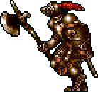
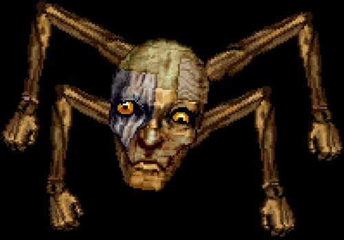

5. Peeping Big

Just a big eyeball with a tail, considered the lamest boss in the series.
Why
4. The Dancing Spectres

A pair of ghosts that act as a boss version of the Ghost Dancer enemy found in the level.
3. Sir Grakul
A knight that attacks with an axe, sword, and a magic flame wave.
2. Puppet Master
A large head with four arms connected to it, can make the player trade places with it's puppets.